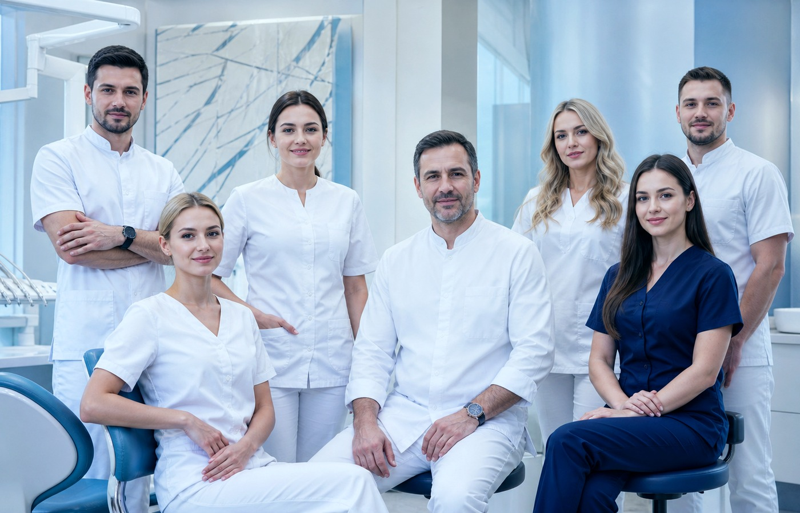
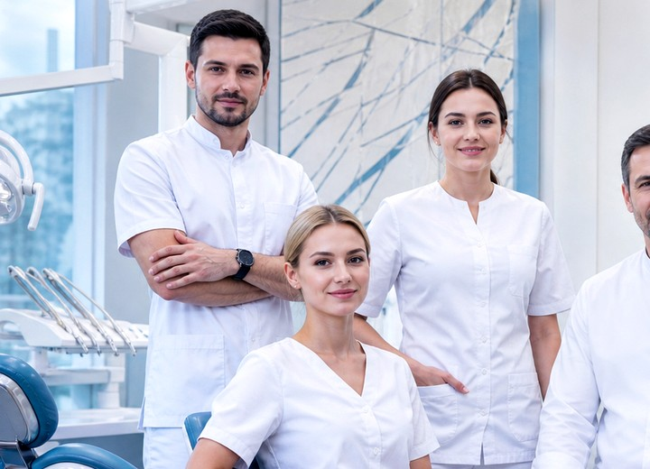
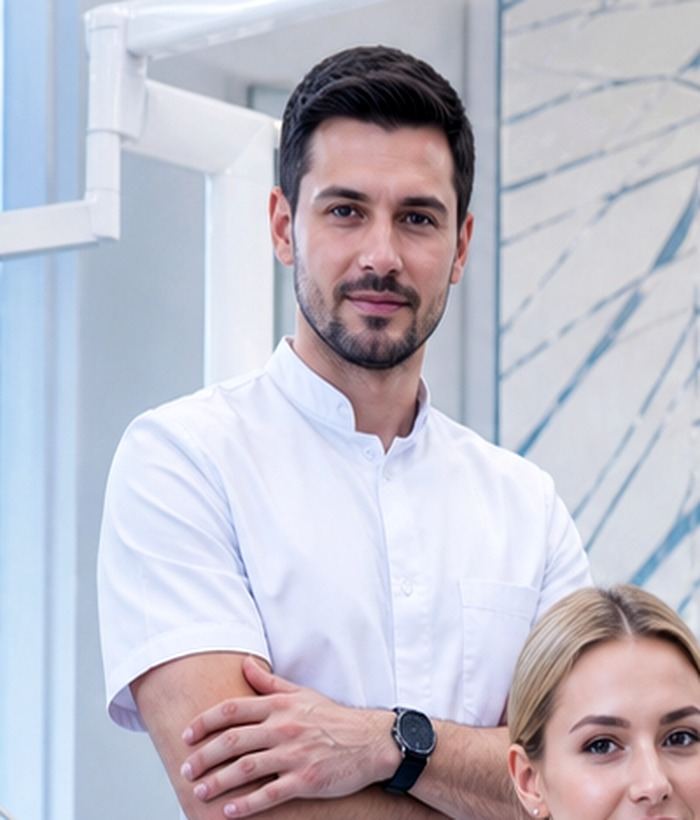
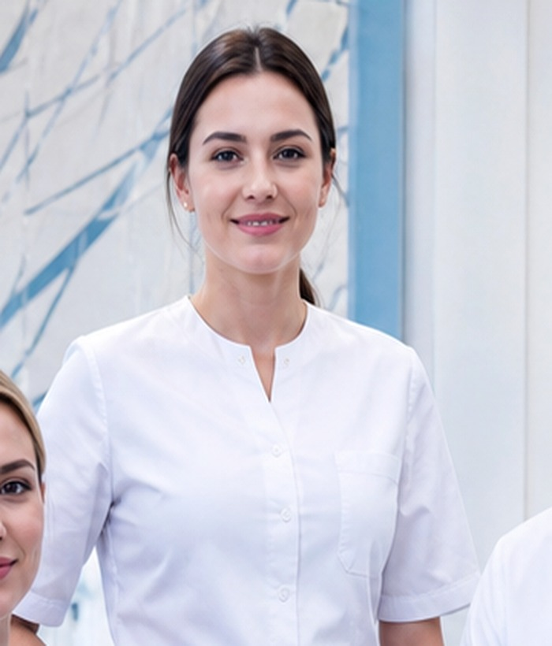
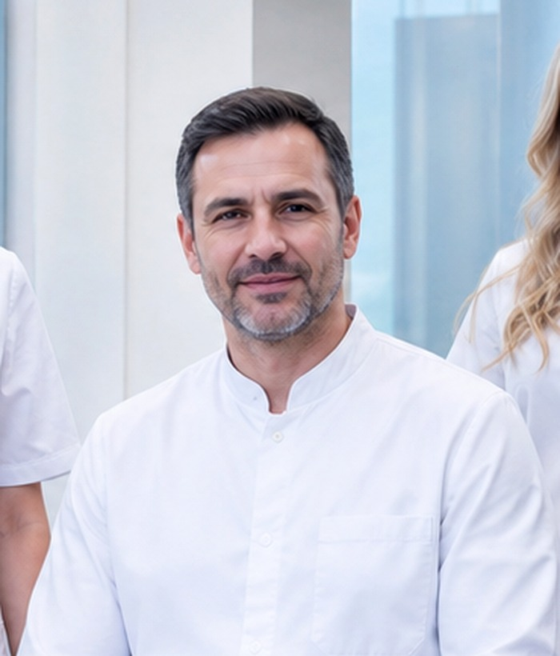
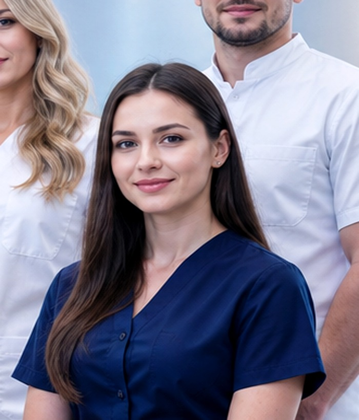
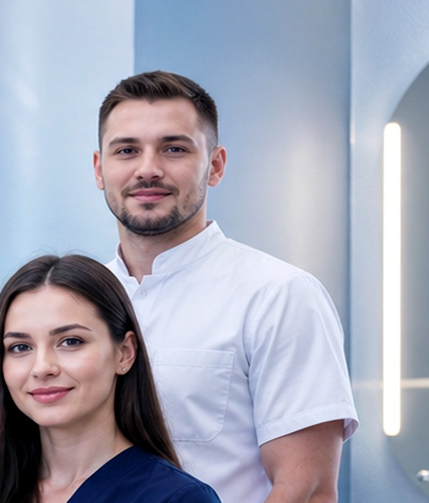

Имплантолог
Хирургия и цифровые шаблоны.
12 специалистов с опытом от 8 до 18 лет. Все врачи регулярно обучаются за рубежом — США, Швейцария, Корея. Сертификаты не висят на стенах — они подтверждены реальной практикой и тысячами успешных кейсов.



Единый визуальный стиль, сильные портреты и чёткая специализация помогают лучше продавать доверие.
Хирургия и цифровые шаблоны.
Эстетика и функциональные протоколы.
Лечение под микроскопом и контроль качества.
Каждый — узкий профиль. Никто не лечит всё подряд.





«Сергей Игоревич объясняет всё, как инженер на стройке: показывает снимок, говорит, где проблема, что будем делать, сколько это займёт и какая гарантия. После него к другим уже не хочется.»
Из Богородска до клиники — 35 км по трассе через Шапкино и Лазарево. На автомобиле — около 40 минут. Парковка свободная, во дворе клиники.
Принимаем пациентов из районов: мкр. Восход, мкр. Кожевенный, ул. Ленина, ул. Котельникова, ул. Кашина.
Ориентиры: Богородский районный краеведческий музей, ТЦ Богородский, Кожевенный завод.
Сильные врачебные карточки и общий визуальный стандарт делают сайт дороже на ощущение.
Скажите, что вас беспокоит — подберём специалиста. Первичный приём бесплатный, гарантию даёт лично врач.